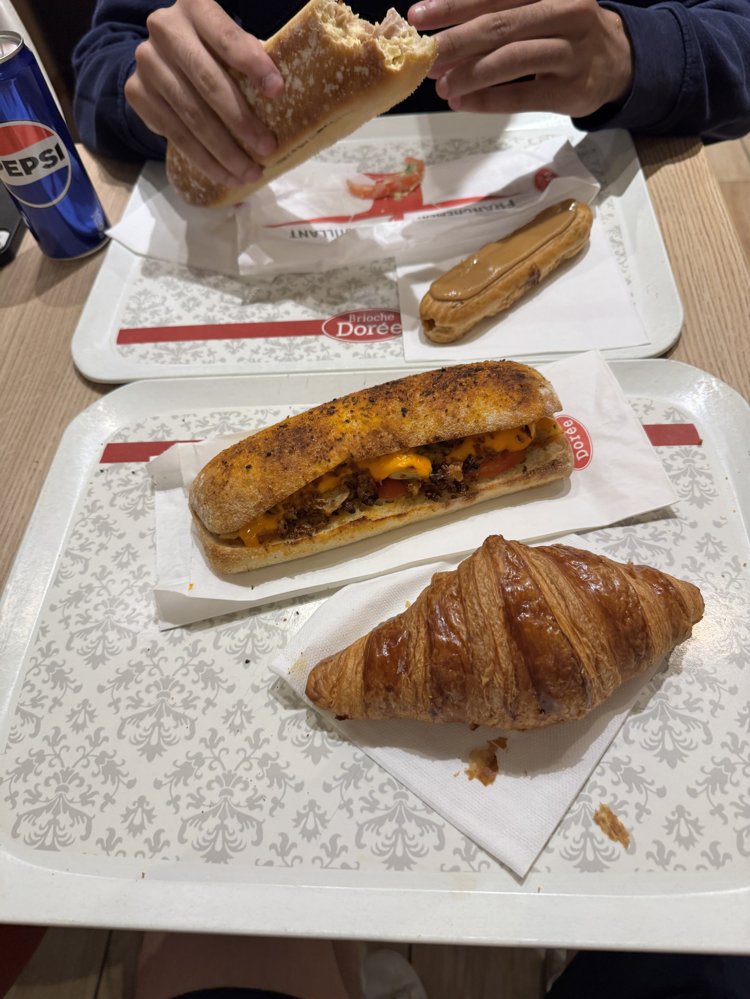
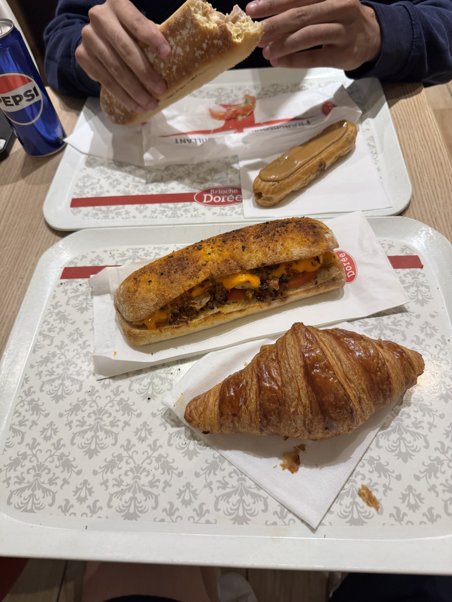

Getting Off the Airplane
I finally woke up from my 3 hour slumber on the airplane. I did not get a good sleep as the seats were uncomfortable. However, when we finally touched down, I grabbed my bags and headed for the exit to meet with Katie and Ryan. We met with Professor Pascale at the entrance and headed to the bus station!
Seeing My Hotel
As we headed from the bus station, we went to the hotel where we got our keycards and checked in! My hotel was very nice with decent space but a small bathroom. It is okay though :O I will manage.
Grabbing Food and Walking Around with Ryan
Now that I am at the hotel, Ryan and I decided to go to the supermarket to find his childhood favorite snacks which is a cheese dip cracker that needs to be refrigerated? Upon discovery that our hotel rooms do not provide a refrigerator, we gave up and went to the cafe next to us to grab a sandwich. Then, I headed back to the hotel with Ryan and showered and took a nap.
Walking Around with the Others
I woke up from my nap at roughly 4:57PM to Ryan knocking on my door. Thankfully, without Ryan I think I still would have been asleep by now. We headed out to walk around Nice with everybody and I took a lot of photos ! It was beautiful to see the sea and all the charming little spots around nice. We also stopped for some ice cream in which I got some guava flavoured ice cream. It was very delicious. We then split up and I headed with the girls to grab some dinner ! I got some pasta and wine and it was absolutely delish. That is my day for today !!
En Francais ?
J'ai choisi cette photo car elle montre le premier repas que j'ai mangé avec Ryan chez Brioche Dorée.

 
